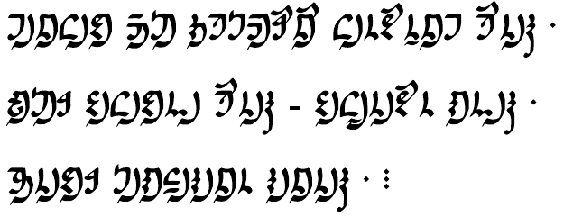

Table of Contents
This is the summary document for relay 11. For a more detailed version of these torches, please click on a specific link to view the relay.
1 Mel – Sevelian
English
The sun, the light in your eyes, trapped me in a cage
When you saw me you saw yourself
We were the ones that marched and fell
Sevelian
Hvis, desevilas onana niž, vya kveu aitillim
Klaundrim vya valanu, nyén valu
Vaia šioneius aundra kantzanaiu má gayanaiu aiu
2 Sascha – Tánpz
English
“The sun with its light trapped me in your eyes like in a cage.”
“When you saw me, you saw yourself.”
“Us two, we marched and fell.”
Tánpz
Tínni nvhùlz hàliyi námikz’ìn áti ź yùún.
Yź áti niyá’ nvniyáya yź.
Tź, páai’ nvfu’tz yútz.
3 Talla – Laikan
English
The sun trapped like a cage its light on to me from your eyes.
Then you could see me seeing you.
Me and you went and fell for each other.
Laikan
Hwān lotśa śotśēwa okītsayeyaṃ myataonaïyarki.
Təti myasustaïtū, sunnatsau.
Ñatowa naronaāyaiwē.
4 Bbbourq – Lortho
English
The sun light from your eyes captured me.
Then you saw me, watching.
Both of us were bound together.
Lortho

tinala thosa moshtharunau linkhunenat hunime.
dasar kilikhanni hunime – kileinikhun mannime.
bonikhar simalhiminan minanime.
5 Sparks – Enłalen
English
As for the starlight from the eyes, you attain me.
You looked at me, then I watched you.
We are tied together.
Enłalen
φaθołon osiφa yano θemoyon-wa wo τai wan-ten am.
wan-wa oł θisa am κiπi i ilsil am-ten.
mo-wa wo olni ilπi.
6 Nankazz – Ní:kwasikw
English
The light shines from the eyes, and you get me.
After you saw me, I will see you.
We are one.
Ní:kwasikw
Srinir ḟiduhta rḟato, bana kirnuhta.
Bana kirnuhta htur bana kinaþa.
Bana riþur.
7 Kozet – levian9
English
The light shines from the eyes, and you get me.
After you saw me, I will see you.
We are one.
levian9
Srinir ḟiduhta rḟato, bana kirnuhta.
Bana kirnuhta htur bana kinaþa.
Bana riþur.
8 Mareck – Moógatí
English
eye moves away from light (i witnessed this recently)
i see below and (as a result) i carry them away
they are carried together because i hit them
Moógatí
kʰábe keʔo pehíʔóhbuɾibáʔoɾoó
keʔo ɾógikúuʔoha ʔuɾuʔóhbupápkʰapóʔoha
bihɾu epkʰuʔoɾoó ʔuɾuʔuɾkʰapuʔoha
9 Place – langname
English
“the stars stand in the sky.
i touch the stars above me.
i move them away from below.
they were touched. i made them move.”
langname
húnni tak t’upessúrsusu.
nún húnni t’unnewe t’u nuk’utta.
húnni nesen t’u nesari.
t’ubin gútta - nek’ruwatta!
10 Andi – Modern Ralian
English
the moon was in the night sky
i was above the moon and i touched it
the moon was below where i stood
it was my beloved, i must move it!
Modern Ralian
Tâvune emo ngoñat ilus
Râdodoc tâvu, laloc kâ
Tâvune ji kâ türâ sıñaroc
Kâle anu omâ alus, tıdasâ kâ!
11 Sincy – Orajh
English
The moon is in the night sky.
I was once greater than the moon. It’s being touched.
I have stood with the moon.
(But) those it loves are the ones I love too, so I shall have it (the moon) move away.
Orajh
luvora jórivalúúra kilú silmase qo
eo voja silmase néri súú qo
óma voja silmase kilú qo
ńárvasa: vora mú ria hadei rana ria hadei, sui júúlú aju kivúśiremúó silmase qo
12 Mel (2) – Sevelian
English
There is a moon in the nightsky
I was bigger than the moon
I was on the moon
However, it is I am the beloved’s and they are the beloved’s, thus I say indeed the moon will be forced to be moved
Orajh
Lyani nyutrašimim
Va vrukuru lyanin inaŭ
Lyanim ĭsaŭ
Ma, aundra va má su aimetziž anaiu imé, sá aidamin lyani azidzelikatzonu